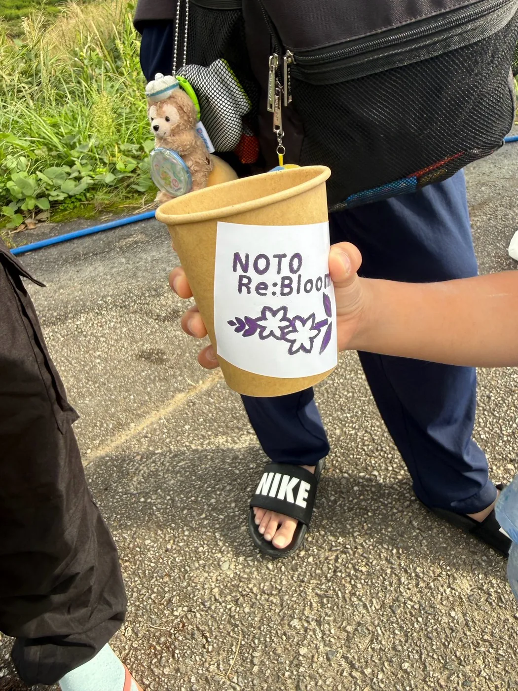

参加フォームから申込み
開催前は参加費無料で申込みを受け付け、家族や友人と参加する場合も参加者ごとの登録をお願いしていました。
現在の開催レポートを見る泥だらけで、能登を咲かせる。2026.9.20 / SUZU
使われなくなった土地を、みんなが集まり、笑い合える場所へ。珠洲市若山町洲巻の田んぼで、子どもから大人まで泥の中で思いっきり遊ぶ一日として企画しました。以下には、開催前に掲載していた競技・来場・着替え・泥落としなどの案内を記録として残しています。

当時の情報を資料として残しているため、「予定です」「お持ちください」などの表現を一部そのまま保存しています。現在の参加受付・来場案内ではありません。
開催前最終更新（9/19）： 会場位置・会場付近の安全誘導・5つの競技・トイレ・更衣・泥落とし方法を掲載していました。
後援：北國新聞社 ／ MRO北陸放送HOW TO JOIN / ARCHIVE
当時、参加者の方へ案内していた申込み・準備・受付の流れです。
開催前は参加費無料で申込みを受け付け、家族や友人と参加する場合も参加者ごとの登録をお願いしていました。
現在の開催レポートを見る泥だらけになってよい服、着替え、タオル、汚れ物用の袋、飲み物などの準備をお願いしていました。
当時の持ち物案内を見る ↓開催前は、12:00頃から会場付近にスタッフを配置し、安全誘導のもと12:30から受付を行う流れとして案内していました。
会場マップを開く ↗BEFORE YOU COME / ARCHIVE
駐車・トイレ・服装・着替えなど、当時参加者向けに掲載していた情報です。
12:00頃から、会場付近にスタッフを配置します。周辺には道幅の狭い場所もあるため、現地ではスタッフの安全誘導に従って、ゆっくり駐車・移動してください。
一部道幅が狭い場所があります。大型車も通行可能ですが、軽自動車やコンパクトカーだと安心です。
田んぼへ向かう前に、旧上黒丸小学校でトイレを済ませてからお越しください。
大人のふくらはぎ程度まで泥に入る予定です。短パンに限らず、泥だらけになってもよい服装であれば大丈夫です。
裸足でも参加できます。足元が心配な方は農業用・田植え用の足袋、目が心配な方はサングラスやゴーグル、お子さまは水中メガネもおすすめです。
会場で車に乗れる程度まで泥を落とし、更衣スペースで着替えます。さらに流したい方は旧上黒丸小学校のシャワーをご利用いただけます。
車でお越しの方へ： 会場マップは位置確認用です。会場付近ではスタッフを配置していますので、現地の安全誘導に従ってゆっくり駐車場所へお進みください。
PROGRAM / ARCHIVE
当時掲載していた競技ルールを記録として残しています。実際の実施結果は開催レポートをご覧ください。
大人が泥の中からカラーボールを探して子どもへ届け、子どもがカゴへ投げます。小さなお子さまも参加しやすい競技です。
赤組・白組の5対5。3試合行い、泥の中で踏ん張りながらチームで力を合わせます。
チームで一列になり、水の入った容器を手渡し。空の容器も同じ列を逆向きに戻します。
手のひら同士で押し合う1対1勝負。体格が近い参加者同士で対戦し、足の裏以外が泥についたら負けです。
赤組・白組の5対5。柔らかいボールを使った5分間の勝負です。全力疾走・滑り込み・飛び込みは行いません。
正式競技のあと、希望者が主催者・学生スタッフへ挑戦。勝者にはコカ・コーラ製品と交換できるCoke ONチケットを景品としてお渡しする予定です。
DAY FLOW / ARCHIVE
開催前に掲載していた予定時刻です。実際の一日の様子は開催レポートにまとめています。
会場付近にスタッフを配置します。現地の安全誘導に従って移動してください。
参加確認を行います。田んぼへ行く前に旧上黒丸小学校でトイレを済ませてください。
安全説明後、5つの競技を休憩をはさみながら実施します。
レンゲカップや交流、泥落とし・着替え。16:30頃閉会、17:00頃解散予定です。
WHAT TO BRING / ARCHIVE
泥だらけになることを想定し、参加者へ準備をお願いしていた内容です。
動きやすく、洗いやすい服装をご用意ください。
会場に更衣スペースを設けます。
服・タオル・履き物をまとめて持ち帰れるものが便利です。
アクエリアスをご用意する予定ですが、各自でも飲み物をお持ちください。
普通の靴やサンダルは泥の中で脱げやすいため注意してください。
お子さまは水中メガネもおすすめです。
天候に合わせて暑さ・日差し対策をお願いします。
レジャーシート、大きなゴミ袋、古タオルなどがあると安心です。
スマートフォンや財布は、できるだけ泥の中へ持ち込まないようお願いします。
SAFETY & SUPPORT / ARCHIVE
田んぼならではのリスクを踏まえ、当時参加者へ案内していた安全上のルールです。

TAKE HOME
競技のあと、レンゲの種を使った「Re:Bloomレンゲカップ」を作り、自宅へ持ち帰ります。イベントのあとも花が育つ時間まで楽しんでもらう企画です。
FAQ / ARCHIVE
参加者向けに掲載していた質問と回答を、当時の案内記録として残しています。
競技参加・見学ともに無料です。
9月19日（土）まで受け付けていました。
大人の方もお子さまも参加可能として案内し、参加される方には参加フォームからの申込みをお願いしていました。
12:00頃から会場付近にスタッフを配置します。現地の安全誘導に従って駐車場所へお進みください。周辺には道幅の狭い場所があるため、可能であれば小さめの車がおすすめです。
9月20日は日曜日で、会場方面を通る珠洲市営バスの若山飯田ルートは土・日曜日運休です。そのため、基本的には車での来場をおすすめします。車以外での来場を検討されている方は事前に運営へご相談ください。
会場にはありません。旧上黒丸小学校で済ませてからお越しください。
泥だらけになってもよい、動きやすく洗いやすい服装でご参加ください。裸足でも参加できます。足元が心配な方は農業用・田植え用の足袋などがおすすめです。
会場にテント等を使った更衣スペースを設けます。
会場で車に乗れる程度まで大まかに泥を落とします。さらに流したい方は旧上黒丸小学校のシャワーをご利用いただけます。
目をこすらず、すぐスタッフへお声がけください。清潔な水で洗い流します。痛みや違和感が続く場合は無理に競技へ戻らないでください。
親子お宝ハンター＆玉入れ、泥んこ綱引き、泥んこバケツリレー、泥んこ手押し相撲、泥んこドッジボールの5種目です。
小雨は開催予定です。雷・大雨・強風など安全確保が難しい荒天の場合は中止します。
いいえ。5つすべての競技への参加は強制ではありません。体調や気分に合わせて、参加したい競技を楽しんでください。
大人のふくらはぎ程度まで泥に入る予定です。場所によって状態が異なるため、当日の安全説明とスタッフの案内に従ってください。
はい。体調と田んぼの状態を見ながら、競技の間に適宜休憩をはさんで進行します。無理をせず、必要なときはスタッフへお声がけください。
開催前は、このイベントページと泥ん子運動会公式Instagram ↗で案内していました。
開催前は、infonotorebloom@gmail.com へのメール連絡をお願いしていました。
このページに加えて、泥ん子運動会公式Instagram ↗でも準備の様子や最新情報を発信しています。
EVENT ARCHIVE
このページは開催前に掲載していた案内のアーカイブです。実施結果や当日の記録は、開催レポートからご覧ください。